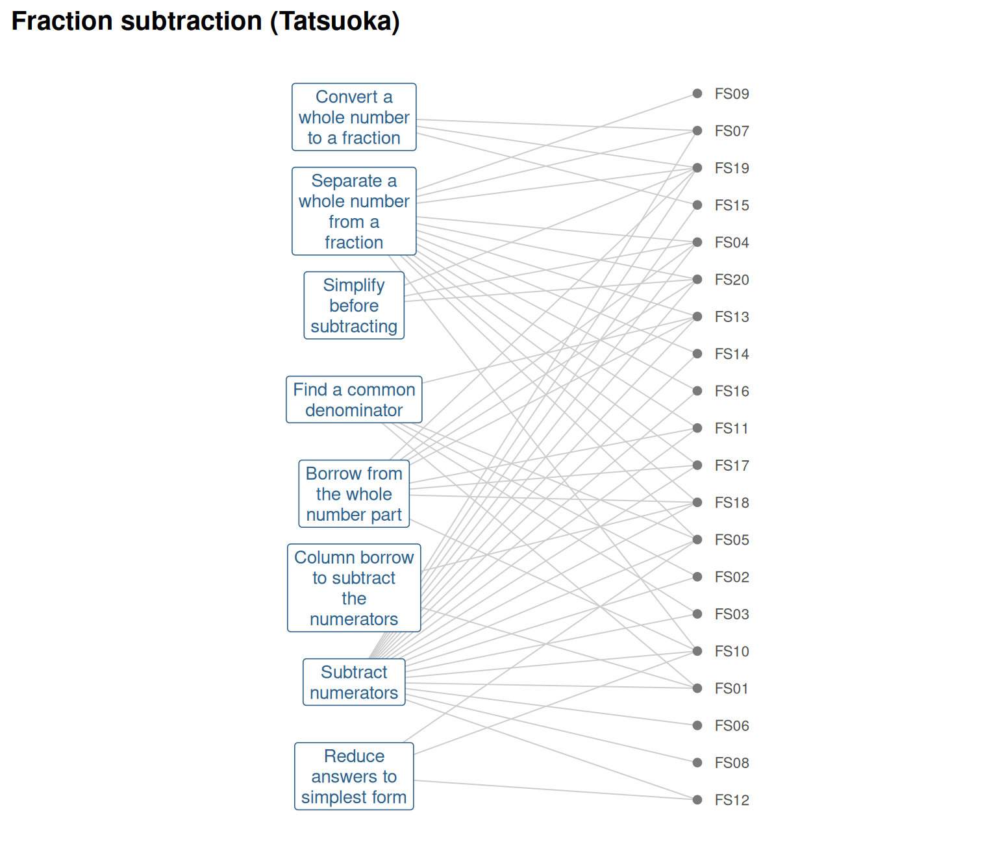
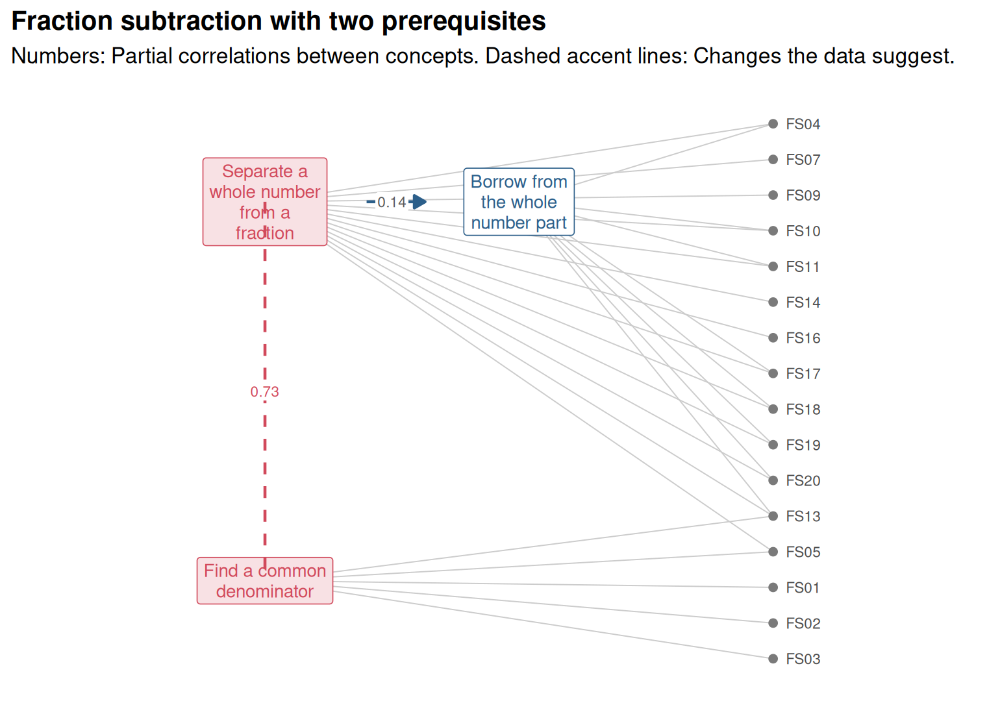
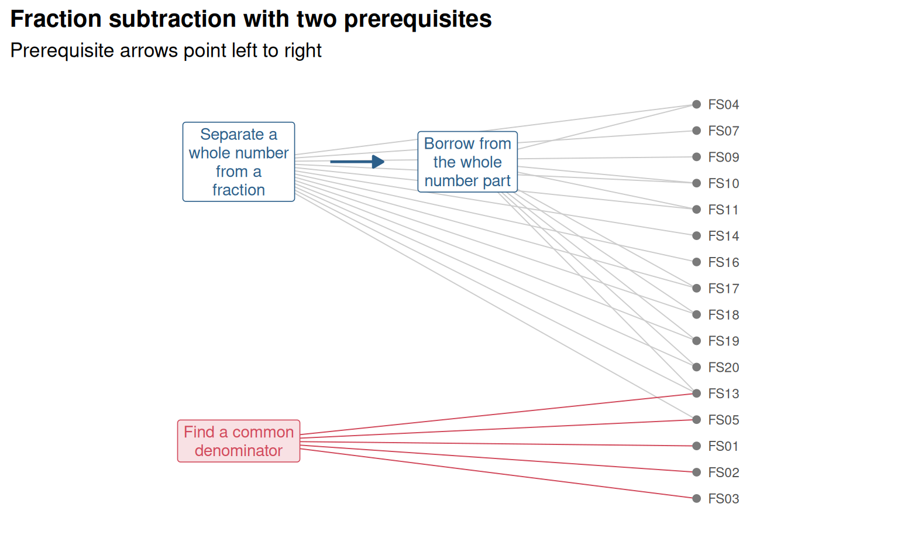

Chapter 19 Knowledge graphs and IRT
Learning goals. After this chapter you can
- describe what a test measures as a knowledge graph of concepts,
prerequisites and items, and build one with
mv_kg_build()oras_mv_kg(); - check a graph for problems with
mv_kg_check()and draw it withgg_kg(); - read a graph’s Q-matrix and list the mastery patterns its attribute hierarchy allows;
- turn a graph into a confirmatory multidimensional IRT model with
mv_kg_model()andmv_kg_irt(), and test the graph’s claims against simpler and stricter models; - check a graph against data with
mv_kg_fit()and explain item difficulty with it usingmv_kg_explain().
Key terms: Knowledge graph, Q-matrix, attribute hierarchy, multidimensional IRT, likelihood-ratio test.
19.1 The ideas
Every test is built on claims about what it measures. A blueprint says which content each item covers; a curriculum says that some ideas must be learned before others; a teacher knows that an item about subtracting mixed numbers also needs borrowing. Most of these claims stay in documents and heads. A knowledge graph writes them down in a form a computer can check and a model can use. It has three kinds of parts.
- Concepts (also called skills, attributes or objectives): What the test is meant to tell us about.
- Relations between concepts. The most useful is prerequisite of: Equivalent fractions before adding fractions with unlike denominators. Prerequisite edges point forward in the learning order and should never form a cycle. A weaker relation, related to, links concepts where neither comes first.
- Items, each linked to the concepts it measures. These links are the rows of the Q-matrix (Tatsuoka 1984): One row per item, one column per concept, with a 1 where the item needs the concept.
The graph connects two traditions in psychometrics. In multidimensional IRT, the Q-matrix is the loading pattern of a confirmatory model: Each concept is a factor, and an item has a slope only on the concepts it measures (Chapter 4). In cognitive diagnosis, the same Q-matrix says which skills an item needs, and prerequisite edges form an attribute hierarchy (Leighton et al. 2004; Templin and Bradshaw 2014): A student can master a concept only after mastering its prerequisites, so some mastery patterns are impossible. Knowledge space theory (Doignon and Falmagne 1999) builds a whole theory of assessment on such structures.
A graph is a set of claims, and each claim can be wrong. An item can be linked to the wrong concept, a prerequisite can be missing or reversed, and two concepts can be impossible to tell apart because the same items measure them. The work in this chapter is to make the claims explicit, check what can be checked without data, and then let the data speak.
19.2 Example 1: A graph for fraction subtraction
Tatsuoka’s fraction subtraction data are the best-known real data in
cognitive diagnosis: 536 middle school students answered 20 items such as
\(4\frac{1}{3} - 2\frac{4}{3}\), and the items were coded on eight
attributes (Tatsuoka 2002; DeCarlo 2011; Torre and Douglas 2004). mirtverse
stores the responses as fraction_subtraction and the Q-matrix as a
knowledge graph, fraction_subtraction_kg.
kg
#> <mv_kg> Fraction subtraction (Tatsuoka): 8 concept(s), 20 item(s)
#> Edges: 0 prerequisite, 0 related, 56 measures
#> Item metadata: text
tidy(kg)
#> # A tibble: 28 × 6
#> node kind label description links depth
#> <chr> <chr> <chr> <chr> <dbl> <dbl>
#> 1 convert_whole concept Convert a whole number to … Attribute … 3 0
#> 2 separate_whole concept Separate a whole number fr… Attribute … 13 0
#> 3 simplify_first concept Simplify before subtracting Attribute … 3 0
#> 4 common_denominator concept Find a common denominator Attribute … 5 0
#> 5 borrow_whole concept Borrow from the whole numb… Attribute … 8 0
#> 6 column_borrow concept Column borrow to subtract … Attribute … 2 0
#> # ℹ 22 more rowsThe graph has eight concepts and 20 items, with 56 item-to-concept links.
No prerequisite edges were published with the Q-matrix, so the graph has
none yet. tidy() counts the items linked to each concept (links).
subtract_numerators is needed by 19 of the 20 items, while
column_borrow is needed by only two. Before any data are used,
mv_kg_check() looks for problems in the structure itself.
mv_kg_check(kg)
#> <mv_kg_check> 0 block, 1 review, 0 info
#> * [review] few_items: column_borrow is measured by 2 item(s); at least
#> 3 are needed to estimate it as its own dimension.The check finds one thing to review: Two items are too few to estimate
column_borrow as its own dimension. A concept that nearly every item
needs, like subtract_numerators, has the opposite problem: It is hard to
separate from overall proficiency. Neither is an error in the graph, but
both limit what a model can learn about these concepts.

Figure 19.1: The fraction subtraction graph: Eight attributes on the left, each joined to the items that need it.
Now suppose a mathematics teacher states two prerequisites as hypotheses: Borrowing from the whole number needs the whole number to be separated from the fraction first, and column borrowing needs subtracting numerators. We add these edges to the same concepts and items.
concepts <- tidy(kg)
concepts <- concepts[concepts$kind == "concept", ]
kg_h <- mv_kg_build(
concepts = data.frame(concept = concepts$node, label = concepts$label),
edges = data.frame(from = c("separate_whole", "subtract_numerators"),
to = c("borrow_whole", "column_borrow")),
items = mv_kg_qmatrix(kg),
name = "Fraction subtraction with two prerequisites")
kg_h
#> <mv_kg> Fraction subtraction with two prerequisites: 8 concept(s), 20 item(s)
#> Edges: 2 prerequisite, 0 related, 56 measures
#> Learning order (by prerequisite depth):
#> 0: convert_whole, separate_whole, simplify_first, common_denominator, subtract_numerators, reduce_answer
#> 1: borrow_whole, column_borrowThe print-out now gives a learning order. The hierarchy has a practical consequence: With eight concepts there are \(2^8 = 256\) possible mastery patterns, and each prerequisite rules out the patterns where a concept is mastered without its prerequisite.
Two edges remove 112 of the 256 patterns. A diagnostic model that respects the hierarchy has fewer classes to estimate, and the hierarchy itself can be tested by comparing models with and without it.
19.3 Example 2: From graph to IRT model
mv_kg_model() writes the confirmatory mirt model a graph implies, and
mv_kg_irt() fits it. Eight correlated dimensions on 536 students is a
large model that takes many minutes to fit, so we work with a smaller
graph: The three concepts with the clearest roles, separating the whole
number, borrowing, and finding a common denominator. mv_kg_subset() keeps
these concepts, the prerequisite between two of them, and the 16 items that
need at least one of them.
kg3 <- mv_kg_subset(kg_h, c("separate_whole", "borrow_whole", "common_denominator"))
kg3
#> <mv_kg> Fraction subtraction with two prerequisites: 3 concept(s), 16 item(s)
#> Edges: 1 prerequisite, 0 related, 26 measures
#> Learning order (by prerequisite depth):
#> 0: separate_whole, common_denominator
#> 1: borrow_whole
q <- mv_kg_qmatrix(kg3)
resp3 <- resp[rownames(q)]
spec <- mv_kg_model(kg3)
cat(attr(spec, "item_syntax"))
#> separate_whole = FS04, FS05, FS07, FS09, FS10, FS11, FS13, FS14, FS16, FS17, FS18, FS19, FS20
#> common_denominator = FS01, FS02, FS03, FS05, FS13
#> borrow_whole = FS04, FS10, FS11, FS13, FS17, FS18, FS19, FS20
#> COV = separate_whole*common_denominator, separate_whole*borrow_whole, common_denominator*borrow_wholeEach concept is a factor, and each item loads on the concepts its row of
the Q-matrix names; items that need two concepts load on both. By default
all concepts correlate. The structure argument changes that:
structure = "graph" lets only concepts joined by an edge correlate, a
strict reading of the graph in which concepts without an edge are
unrelated.
m_uni <- mirt(resp3, 1, verbose = FALSE)
m_graph <- mv_kg_irt(kg3, resp3)
m_strict <- mv_kg_irt(kg3, resp3, structure = "graph")
anova(m_uni, m_graph)
#> AIC SABIC HQ BIC logLik X2 df p
#> m_uni 7739 7775 7793 7876 -3838
#> m_graph 7371 7421 7447 7564 -3641 394.06 13 0
anova(m_strict, m_graph)
#> AIC SABIC HQ BIC logLik X2 df p
#> m_strict 7641 7689 7713 7825 -3778
#> m_graph 7371 7421 7447 7564 -3641 273.834 2 0Two comparisons answer two questions. Against a single dimension, the three-concept model fits far better: The likelihood-ratio statistic is about 394 on 13 degrees of freedom, and BIC drops by more than 300. The items measure more than one proficiency, in the way the graph describes. Against the strict model, the correlated model also wins clearly: Finding a common denominator has no edge in the graph, yet it correlates with the other two concepts.
round(summary(m_graph, verbose = FALSE)$fcor, 2)
#> separate_whole common_denominator borrow_whole
#> separate_whole 1.00 0.77 0.38
#> common_denominator 0.77 1.00 0.39
#> borrow_whole 0.38 0.39 1.00Separating the whole number and finding a common denominator correlate at about 0.77, much more than the two concepts the teacher linked (about 0.37). This is a typical finding, not a failure: A prerequisite edge says something about the order of learning, and concepts that are learned in the same lessons correlate whether or not one is a prerequisite of the other. The correlations are a reason to look again at the graph, for example to ask whether a related-to edge is missing.
The fitted model is an ordinary mirt model, so everything from the earlier chapters works on it, and the graph travels with it.
pars <- tidy(m_graph)
head(pars[pars$estimate != 0, ])
#> # A tibble: 6 × 5
#> item itemtype term estimate std.error
#> <chr> <chr> <chr> <dbl> <dbl>
#> 1 FS01 2PL a2 5.13 NA
#> 2 FS01 2PL d 1.08 NA
#> 3 FS02 2PL a2 7.39 NA
#> 4 FS02 2PL d 2.31 NA
#> 5 FS03 2PL a2 13.8 NA
#> 6 FS03 2PL d 0.943 NA
attr(m_graph, "mv_kg")
#> <mv_kg> Fraction subtraction with two prerequisites: 3 concept(s), 16 item(s)
#> Edges: 1 prerequisite, 0 related, 26 measures
#> Learning order (by prerequisite depth):
#> 0: separate_whole, common_denominator
#> 1: borrow_wholeas_mv_kg() also goes the other way: Given any confirmatory mirt model, it
reads the loading pattern back into a graph, which is a quick way to draw a
model you already have.
19.4 Example 3: Checking the graph against data
The comparisons above test the graph as a whole. mv_kg_fit() looks for
the places where the data disagree with it. For each item, it asks whether
the item agrees more with another concept than with its own: It correlates
the item with the rest score of every concept, corrected for how reliable
each rest score is. For each pair of concepts, it turns the factor
correlations of the correlated model into partial correlations, the
correlation of two concepts once the others are held constant. Concepts
that are directly related keep a clear partial correlation; concepts
related only through others do not. We can pass in the model we already
have.
check <- mv_kg_fit(kg3, resp3, model = m_graph)
check
#> <mv_kg_fit> Fraction subtraction with two prerequisites: 3 concept(s), 16 item(s), N = 536
#> 1 review, 0 info
#> * [review] missing_relation: separate_whole and common_denominator have
#> no edge but a partial correlation of 0.73, and their items are about
#> equally hard; add a related edge?
tidy(check, "relations")
#> # A tibble: 3 × 10
#> concept_a concept_b edge from to type r partial ease_a ease_b
#> <chr> <chr> <chr> <chr> <chr> <chr> <dbl> <dbl> <dbl> <dbl>
#> 1 separate_whole common_d… none <NA> <NA> <NA> 0.771 0.731 0.487 0.500
#> 2 separate_whole borrow_w… sepa… sepa… borr… prer… 0.382 0.137 0.487 0.410
#> 3 common_denomina… borrow_w… none <NA> <NA> <NA> 0.391 0.164 0.500 0.410No item is flagged: Every item agrees best with a concept it is linked to. The relation evidence makes the earlier observation precise. Holding borrowing constant, separating the whole number and finding a common denominator still have a partial correlation of about 0.73, while the teacher’s prerequisite (separate_whole -> borrow_whole) drops to about 0.14. Because the two concepts’ items are about equally hard, the suggestion is a related edge rather than a prerequisite.

Figure 19.2: The evidence on the three-concept graph: Partial correlations next to each pair, and the suggested related edge as a dashed line.
mv_kg_refine() would add the edge. Whether to do so is a content
question: Both skills come up when students handle mixed numbers with
unlike denominators, so a related edge is plausible, but the data alone
cannot say why the concepts go together.
A graph also makes claims about difficulty. mv_kg_explain() fits an
explanatory Rasch model with the eirm package (Bulut et al. 2021) in which
the graph predicts each item’s difficulty: One difficulty per concept (a
linear logistic test model, with a random item effect for what the
concepts leave unexplained), or the item’s depth in the learning order.
explain <- mv_kg_explain(kg, resp)
explain
#> <mv_kg_explain> Fraction subtraction (Tatsuoka): Item difficulty explained by concepts
#> 20 items, N = 536. The graph explains 88% of the item variance.
#> label difficulty se p.value
#> convert_whole 2.10 0.29 <0.001
#> separate_whole -0.18 0.23 0.42
#> simplify_first -0.40 0.33 0.22
#> common_denominator 1.32 0.24 <0.001
#> borrow_whole 2.33 0.29 <0.001
#> column_borrow -0.01 0.33 0.98
#> subtract_numerators -1.69 0.22 <0.001
#> reduce_answer 0.11 0.28 0.69
#> Items the graph predicts poorly: FS09 (-0.91).The eight attributes explain most of the differences in item difficulty. Borrowing from the whole number and converting a whole number to a fraction add the most difficulty, and subtracting numerators, which almost every item needs, the least. The teacher’s two prerequisites, in contrast, say little about difficulty:
mv_kg_explain(kg_h, resp, predictors = "depth")
#> <mv_kg_explain> Fraction subtraction with two prerequisites: Item difficulty explained by learning-order depth
#> 20 items, N = 536. The graph explains 64% of the item variance.
#> label difficulty se p.value
#> Learning-order depth 0.47 0.49 0.3354
#> Number of concepts 0.63 0.21 0.0024Items that need more attributes are harder, but once that is taken into account, an item’s depth in the teacher’s learning order adds little. A prerequisite that does not show up as a difference in difficulty is not necessarily wrong, but it is a claim the data do not support yet.
19.5 Your turn
- Add a third hypothesis to
kg_h: Converting a whole number to a fraction (convert_whole) is a prerequisite of borrowing (borrow_whole). How many mastery patterns are left? - Add a cycle by also making
borrow_wholea prerequisite ofseparate_whole. What doesmv_kg_check()report, and what happens tomv_kg_hierarchy()? - Fit the three-concept model with
structure = "orthogonal". How does it compare with the correlated model, and what does that say about scoring the three concepts separately? - Draw
kg3withgg_kg(), highlightingcommon_denominator. Which items does it share withseparate_whole?
Solutions
# 1. a third prerequisite
edges3 <- data.frame(from = c("separate_whole", "subtract_numerators", "convert_whole"),
to = c("borrow_whole", "column_borrow", "borrow_whole"))
kg_h3 <- mv_kg_build(data.frame(concept = concepts$node, label = concepts$label),
edges = edges3, items = mv_kg_qmatrix(kg))
nrow(mv_kg_hierarchy(kg_h3))
#> [1] 120
# 2. a cycle
kg_cyc <- mv_kg_build(data.frame(concept = concepts$node),
edges = rbind(edges3, data.frame(from = "borrow_whole",
to = "separate_whole")),
items = mv_kg_qmatrix(kg))
mv_kg_check(kg_cyc)
#> <mv_kg_check> 1 block, 1 review, 3 info
#> * [block] cycle: Prerequisite edges form a cycle through
#> separate_whole, borrow_whole, so no learning order exists.
#> * [review] few_items: column_borrow is measured by 2 item(s); at least
#> 3 are needed to estimate it as its own dimension.
#> * [info] isolated: simplify_first has no relations to other concepts.
#> * [info] isolated: common_denominator has no relations to other
#> concepts.
#> * [info] isolated: reduce_answer has no relations to other concepts.
try(mv_kg_hierarchy(kg_cyc))
#> Error : The prerequisite edges contain a cycle; see mv_kg_check().
# 3. uncorrelated concepts
m_orth <- mv_kg_irt(kg3, resp3, structure = "orthogonal")
anova(m_orth, m_graph)
#> AIC SABIC HQ BIC logLik X2 df p
#> m_orth 7642 7689 7712 7822 -3779
#> m_graph 7371 7421 7447 7564 -3641 276.773 3 0
# 4. shared items
gg_kg(kg3, highlight = "common_denominator")
q[q[, "common_denominator"] == 1 & q[, "separate_whole"] == 1, ]
#> separate_whole common_denominator borrow_whole
#> FS05 1 1 0
#> FS13 1 1 1- Borrowing now needs both separating and converting, so more patterns are ruled out: 120 of the 256 remain.
- The check reports a
cycleblock flag: Separating the whole number would have to come both before and after borrowing, so no learning order exists.mv_kg_hierarchy()stops with an error, because a cycle allows no consistent set of patterns. - The orthogonal model fits much worse than the correlated one (the likelihood-ratio statistic is about 277 on 3 degrees of freedom). The concepts share a lot of variance, so three separate scores would repeat much of the same information; reporting them separately needs care (Chapter 12).
- Two items, FS05 and FS13, need both concepts; FS13 also needs borrowing. The other common denominator items (FS01 to FS03) involve no whole numbers. Items that load on two concepts help the model separate the concepts from their correlation.
In the lab
Lab 11, Repairing a knowledge graph (run_lab("kg-repair")): A
district’s curriculum team has written a knowledge graph for its Grade 5
fractions test, and diagnostic reports will follow it. Check the graph
against the students’ answers with mv_kg_fit(), find an item linked to
the wrong concept and a missing prerequisite, repair the graph with
mv_kg_refine(), and show what the repair changes.
Further reading
Tatsuoka (1984) introduced the Q-matrix with the fraction subtraction data; DeCarlo (2011) and de la Torre and Douglas (2004) reanalysed them with diagnostic models. Leighton, Gierl and Hunka (2004) describe the attribute hierarchy method, and Templin and Bradshaw (2014) show how to test hierarchies with diagnostic classification models. Doignon and Falmagne (1999) develop knowledge space theory, the mathematical theory of prerequisite structures in assessment.